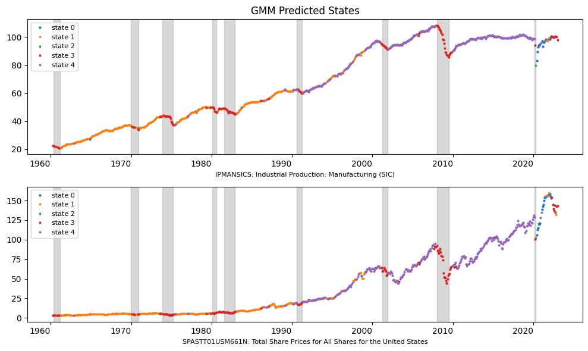
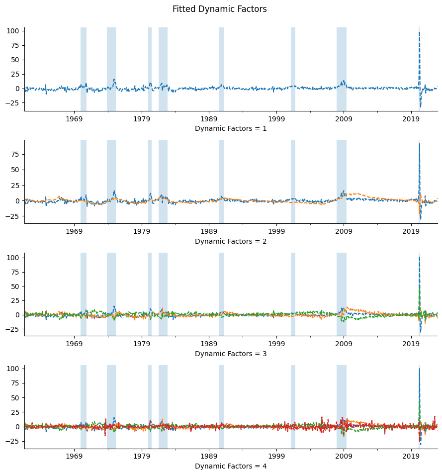

State Space Models#
UNDER CONSTRUCTION
Gaussian Mixture Model
Hidden Markov Models
Viterbi algorithm
Kalman Filter and Dynamic Factor Models
import re
import time
import random
from datetime import datetime
import numpy as np
import pandas as pd
from pandas import DataFrame, Series
import matplotlib.pyplot as plt
import statsmodels.api as sm
from hmmlearn import hmm
from sklearn.mixture import GaussianMixture
from sklearn.preprocessing import StandardScaler
from tqdm import tqdm
from typing import List, Dict
from finds.readers import fred_md, fred_qd, Alfred
from finds.misc import Show
from secret import paths, credentials
show = Show(ndigits=4, latex=None)
VERBOSE = 0
# %matplotlib qt
imgdir = paths['images'] / 'states'
# Load and pre-process time series from FRED
alf = Alfred(api_key=credentials['fred']['api_key'])
vspans = alf.date_spans('USREC') # to indicate recession periods in the plots
today = int(datetime.today().strftime('%Y%m%d'))
beg = 19600301
end = 20221231 # should be current less 4-6 months?
split = 20220601 # forecast last two quarters
FRED-MD
replace outliers
apply tcode transformations
train/test split: train up to MINUS two quarters, forecast through current
#
#
# TODO: use EM to replace outliers in data
#
#
# Retrieve FRED-MD series and apply tcode transformations
df, t = fred_md() # from vintage April 2020?
data = []
for col in df.columns:
data.append(alf.transform(df[col], tcode=t['transform'][col], freq='m'))
mdf = pd.concat(data, axis=1).iloc[2:]
mdata = mdf[(mdf.index >= beg) & (mdf.index <= end)].dropna(axis=1)
mdata = (mdata - mdata.mean(axis=0)) / mdata.std(axis=0, ddof=0)
mdata.index = pd.DatetimeIndex(mdata.index.astype(str), freq='m')
mdata
monthly/current.csv
| RPI | W875RX1 | DPCERA3M086SBEA | CMRMTSPL | RETAIL | INDPRO | IPFPNSS | IPFINAL | IPCONGD | IPDCONGD | ... | PCEPI | DDURRG3M086SBEA | DNDGRG3M086SBEA | DSERRG3M086SBEA | CES0600000008 | CES2000000008 | CES3000000008 | DTCOLNVHFNM | DTCTHFNM | INVEST | |
|---|---|---|---|---|---|---|---|---|---|---|---|---|---|---|---|---|---|---|---|---|---|
| 1960-03-31 | -0.055906 | -0.239279 | 1.361862 | -2.436357 | -0.373310 | -1.128282 | -0.544828 | -0.288448 | -0.030594 | -0.670564 | ... | -0.251034 | -1.387819 | 0.286975 | -0.688081 | -0.005209 | 3.346166 | -1.006546 | 0.145331 | 0.048471 | 0.322440 |
| 1960-04-30 | 0.070437 | 0.197310 | 1.518351 | 0.617775 | 1.351158 | -1.018832 | 0.046300 | -0.071603 | 0.510438 | -0.099990 | ... | 1.588834 | 1.257955 | 0.711232 | 0.889271 | -2.259533 | -7.559300 | 0.000557 | 0.363396 | 0.275403 | 2.250783 |
| 1960-05-31 | -0.014758 | 0.007897 | -2.731964 | -2.719109 | -1.263778 | -0.315496 | 0.397676 | 0.466734 | 0.398859 | 0.223473 | ... | -1.342564 | -0.394294 | -1.073753 | 0.360705 | 2.259270 | 4.621913 | 0.000557 | -0.202301 | -0.103697 | 0.351217 |
| 1960-06-30 | -0.149637 | -0.427661 | -0.336036 | 0.517670 | -0.390060 | -1.503229 | -1.370566 | -1.260830 | -0.785716 | -0.387215 | ... | -0.311868 | -0.801636 | 0.036861 | -0.425122 | -1.129832 | -1.268962 | 0.000557 | 0.214617 | 0.374620 | -0.935720 |
| 1960-07-31 | -0.062582 | -0.079816 | -0.067982 | -0.728275 | -0.947820 | -0.556224 | -0.785820 | -0.725112 | -1.008340 | -1.242847 | ... | 0.682163 | 0.869009 | 0.293779 | 0.307193 | 1.124537 | 0.838260 | 0.000557 | -0.457746 | -0.165399 | 3.001718 |
| ... | ... | ... | ... | ... | ... | ... | ... | ... | ... | ... | ... | ... | ... | ... | ... | ... | ... | ... | ... | ... | ... |
| 2022-08-31 | 0.031812 | 0.268079 | 0.259747 | 1.120513 | 0.145295 | -0.095970 | 0.117463 | 0.254708 | 0.145430 | -0.254268 | ... | 1.841999 | 2.128771 | -0.404350 | 3.054382 | -0.364202 | 0.306571 | -0.772418 | 0.051969 | 0.071119 | -0.431431 |
| 2022-09-30 | -0.105971 | -0.000502 | -0.002497 | -0.128454 | -0.313545 | 0.095777 | -0.137272 | -0.231848 | -0.406570 | -0.193276 | ... | 0.386374 | -0.105260 | 0.628192 | -0.070539 | 0.354791 | -0.003621 | 0.682301 | 0.217847 | -0.008291 | -0.680035 |
| 2022-10-31 | -0.107340 | -0.775597 | 0.005934 | -0.260730 | 0.360985 | -0.314157 | 0.060215 | 0.222922 | 0.347623 | 0.342962 | ... | 0.386478 | -2.555433 | 1.999584 | -0.833222 | 0.083418 | -0.172316 | 0.081215 | 0.013922 | 0.108611 | -0.412855 |
| 2022-11-30 | -0.214863 | -0.510423 | -0.803318 | -0.939377 | -1.145908 | -0.538102 | -0.534353 | -0.557796 | -0.308918 | -0.744716 | ... | -1.270842 | -0.531799 | -1.413324 | -0.351634 | 0.258909 | -0.069131 | 0.837302 | 0.067908 | -0.003047 | 0.892882 |
| 2022-12-31 | -0.227146 | -0.418519 | -0.540658 | 1.027194 | -0.762278 | -1.797629 | -1.433904 | -0.978260 | -0.728798 | -0.377401 | ... | 0.156942 | 1.050942 | -0.980203 | 1.076286 | -0.272668 | 0.333477 | -1.268091 | -0.111931 | -0.058777 | 0.819264 |
754 rows × 120 columns
Gaussian Mixture Model#
gmm = GaussianMixture(n_components=n_components,
covariance_type='diag')\
.fit(mdata)
labels = gmm.predict(mdata)
plot_states('GMM', labels, min(mdata.index), max(mdata.index))

## Compare persistance of HMM and GMM
dist = DataFrame({
'Hidden Markov': (sorted(matrix.iloc[:,-1])
+ [np.mean(pred[:-1].values == pred[1:].values)]),
'Gaussian Mixture': (sorted(Series(labels).value_counts().sort_index()
/ len(labels))
+ [np.mean(labels[:-1] == labels[1:])])},
index=([f'Stationary probability of state {n_components-s-1}'
for s in range(n_components)]
+ ['Average persistance of states']))
show(dist, caption="Compare HMM with GMM:")
| Hidden Markov | Gaussian Mixture | |
|---|---|---|
| Compare HMM with GMM: | ||
| Stationary probability of state 4 | 0.0013 | 0.0013 |
| Stationary probability of state 3 | 0.0464 | 0.0451 |
| Stationary probability of state 2 | 0.1740 | 0.1658 |
| Stationary probability of state 1 | 0.3638 | 0.3660 |
| Stationary probability of state 0 | 0.4144 | 0.4218 |
| Average persistance of states | 0.8526 | 0.8181 |
## Retrieve FRED-MD series and apply tcode transformations
"""
df, t = fred_md(202004) # from vintage April 2020?
data = []
for col in df.columns:
data.append(alf.transform(df[col], tcode=t['transform'][col], freq='m'))
mdf = pd.concat(data, axis=1).iloc[2:]
mdata = mdf[(mdf.index >= beg) & (mdf.index <= end)].dropna(axis=1)
mdata = (mdata - mdata.mean(axis=0)) / mdata.std(axis=0, ddof=0)
mdata.index = pd.DatetimeIndex(mdata.index.astype(str), freq='m')
"""
"\ndf, t = fred_md(202004) # from vintage April 2020?\ndata = []\nfor col in df.columns:\n data.append(alf.transform(df[col], tcode=t['transform'][col], freq='m'))\nmdf = pd.concat(data, axis=1).iloc[2:]\nmdata = mdf[(mdf.index >= beg) & (mdf.index <= end)].dropna(axis=1)\nmdata = (mdata - mdata.mean(axis=0)) / mdata.std(axis=0, ddof=0)\nmdata.index = pd.DatetimeIndex(mdata.index.astype(str), freq='m')\n"
Dynamic Factor Models#
dynamic_factors = dict()
seq_len = 16
for i in [1, 2, 3, 4]:
mod = sm.tsa.DynamicFactorMQ(endog=mdata,
factors=1, # num factor blocks
factor_multiplicities=i, # num factors in block
factor_orders=2, # order of factor VAR
idiosyncratic_ar1=False) # False=white noise
fitted = mod.fit_em(disp=20,
maxiter=200,
full_output=True)
dynamic_factors[i] = DataFrame(fitted.factors.filtered.iloc[seq_len+1:])
dynamic_factors[i].columns = list(range(len(dynamic_factors[i].columns)))
#print(fitted.summary(0))
EM start iterations, llf=-1.166e+05
EM converged at iteration 14, llf=-1.1573e+05, convergence criterion=9.3327e-07 < tolerance=1e-06
EM start iterations, llf=-1.1229e+05
EM iteration 20, llf=-1.095e+05, convergence criterion=1.7942e-05
EM iteration 40, llf=-1.0947e+05, convergence criterion=4.786e-06
EM converged at iteration 57, llf=-1.0947e+05, convergence criterion=9.1845e-07 < tolerance=1e-06
EM start iterations, llf=-1.0663e+05
EM iteration 20, llf=-1.044e+05, convergence criterion=1.3871e-05
EM iteration 40, llf=-1.0438e+05, convergence criterion=3.7032e-06
EM converged at iteration 57, llf=-1.0438e+05, convergence criterion=9.9877e-07 < tolerance=1e-06
EM start iterations, llf=-1.0269e+05
EM iteration 20, llf=-99741, convergence criterion=1.3581e-05
EM iteration 40, llf=-99727, convergence criterion=3.2774e-06
EM converged at iteration 57, llf=-99724, convergence criterion=9.3062e-07 < tolerance=1e-06
### Plot dynamic factors
fig, axes = plt.subplots(len(dynamic_factors),1,figsize=(9,10),num=1,clear=True)
for dynamic_factor, ax in zip(dynamic_factors.values(), axes):
dynamic_factor.plot(ax=ax, style='--', legend=False)
for a,b in vspans:
if a >= min(dynamic_factor.index):
ax.axvspan(a, min(b, max(dynamic_factor.index)), alpha=0.2)
ax.spines["top"].set_visible(False)
ax.spines["right"].set_visible(False)
ax.set_xlabel(f"Dynamic Factors = {len(dynamic_factor.columns)}")
plt.tight_layout(rect=[0, 0.03, 1, 0.95])
plt.suptitle(f"Fitted Dynamic Factors ", fontsize=12)
plt.savefig(imgdir / 'dynamic.jpg')
